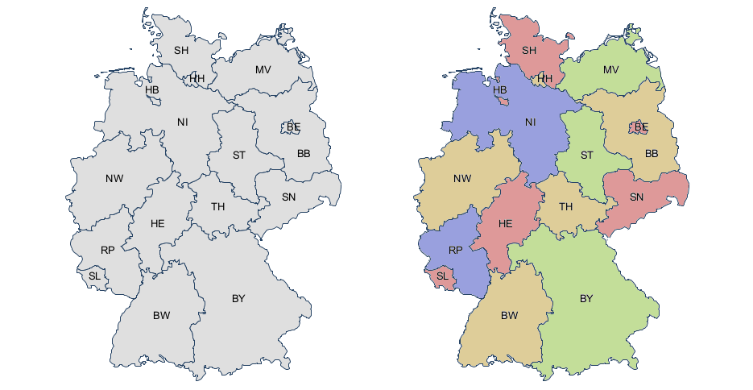

- 000 开篇词 洞悉技术的本质，享受科技的乐趣.md.html
- 001 程序员如何用技术变现（上）.md.html
- 002 程序员如何用技术变现（下）.md.html
- 003 Equifax信息泄露始末.md.html
- 004 从Equifax信息泄露看数据安全.md.html
- 005 何为技术领导力.md.html
- 006 如何拥有技术领导力.md.html
- 007 推荐阅读：每个程序员都该知道的事.md.html
- 008 Go语言，Docker和新技术.md.html
- 009 答疑解惑：渴望、热情和选择.md.html
- 010 如何成为一个大家愿意追随的Leader？.md.html
- 011 程序中的错误处理：错误返回码和异常捕捉.md.html
- 012 程序中的错误处理：异步编程和最佳实践.md.html
- 013 魔数 0x5f3759df.md.html
- 014 推荐阅读：机器学习101.md.html
- 015 时间管理：同扭曲时间的事儿抗争.md.html
- 016 时间管理：投资赚取时间.md.html
- 017 故障处理最佳实践：应对故障.md.html
- 018 故障处理最佳实践：故障改进.md.html
- 019 答疑解惑：我们应该能够识别的表象和本质.md.html
- 020 分布式系统架构的冰与火.md.html
- 021 从亚马逊的实践，谈分布式系统的难点.md.html
- 022 分布式系统的技术栈.md.html
- 023 分布式系统关键技术：全栈监控.md.html
- 024 分布式系统关键技术：服务调度.md.html
- 025 分布式系统关键技术：流量与数据调度.md.html
- 026 洞悉PaaS平台的本质.md.html
- 027 推荐阅读：分布式系统架构经典资料.md.html
- 028 编程范式游记（1）- 起源.md.html
- 029 编程范式游记（2）- 泛型编程.md.html
- 030 编程范式游记（3） - 类型系统和泛型的本质.md.html
- 031 Git协同工作流，你该怎样选.md.html
- 032 推荐阅读：分布式数据调度相关论文.md.html
- 033 编程范式游记（4）- 函数式编程.md.html
- 034 编程范式游记（5）- 修饰器模式.md.html
- 035 编程范式游记（6）- 面向对象编程.md.html
- 036 编程范式游记（7）- 基于原型的编程范式.md.html
- 037 编程范式游记（8）- Go 语言的委托模式.md.html
- 038 编程范式游记（9）- 编程的本质.md.html
- 039 编程范式游记（10）- 逻辑编程范式.md.html
- 040 编程范式游记（11）- 程序世界里的编程范式.md.html
- 041 弹力设计篇之“认识故障和弹力设计”.md.html
- 042 弹力设计篇之“隔离设计”.md.html
- 043 弹力设计篇之“异步通讯设计”.md.html
- 044 弹力设计篇之“幂等性设计”.md.html
- 045 弹力设计篇之“服务的状态”.md.html
- 046 弹力设计篇之“补偿事务”.md.html
- 047 弹力设计篇之“重试设计”.md.html
- 048 弹力设计篇之“熔断设计”.md.html
- 049 弹力设计篇之“限流设计”.md.html
- 050 弹力设计篇之“降级设计”.md.html
- 051 弹力设计篇之“弹力设计总结”.md.html
- 052 区块链技术 - 区块链的革命性及技术概要.md.html
- 053 区块链技术 - 区块链技术细节 - 哈希算法.md.html
- 054 区块链技术 - 区块链技术细节 - 加密和挖矿.md.html
- 055 区块链技术 - 去中心化的共识机制.md.html
- 056 区块链技术 - 智能合约.md.html
- 057 区块链技术 - 传统金融和虚拟货币.md.html
- 058 管理设计篇之分布式锁.md.html
- 059 管理设计篇之配置中心.md.html
- 060 管理设计篇之边车模式.md.html
- 061 管理设计篇之服务网格.md.html
- 062 管理设计篇之网关模式.md.html
- 063 管理设计篇之部署升级策略.md.html
- 064 性能设计篇之缓存.md.html
- 065 性能设计篇之异步处理.md.html
- 066 性能设计篇之数据库扩展.md.html
- 067 性能设计篇之秒杀.md.html
- 068 性能设计篇之边缘计算.md.html
- 069 程序员练级攻略（2018）：开篇词.md.html
- 070 程序员练级攻略（2018）：零基础启蒙.md.html
- 071 程序员练级攻略（2018）：正式入门.md.html
- 072 程序员练级攻略（2018）：程序员修养.md.html
- 073 程序员练级攻略（2018）：编程语言.md.html
- 074 程序员练级攻略：理论学科.md.html
- 075 程序员练级攻略（2018）：系统知识.md.html
- 076 程序员练级攻略（2018）：软件设计.md.html
- 077 程序员练级攻略（2018）：Linux系统、内存和网络.md.html
- 078 程序员练级攻略（2018）：异步IO模型和Lock-Free编程.md.html
- 079 程序员练级攻略（2018）：Java底层知识.md.html
- 080 程序员练级攻略（2018）：数据库.md.html
- 081 程序员练级攻略（2018）：分布式架构入门.md.html
- 082 程序员练级攻略（2018）：分布式架构经典图书和论文.md.html
- 083 程序员练级攻略（2018）：分布式架构工程设计.md.html
- 084 程序员练级攻略（2018）：微服务.md.html
- 085 程序员练级攻略（2018）：容器化和自动化运维.md.html
- 086 程序员练级攻略（2018）：机器学习和人工智能.md.html
- 087 程序员练级攻略（2018）：前端基础和底层原理.md.html
- 088 程序员练级攻略（2018）：前端性能优化和框架.md.html
- 089 程序员练级攻略（2018）：UIUX设计.md.html
- 090 程序员练级攻略（2018）：技术资源集散地.md.html
- 091 程序员面试攻略：面试前的准备.md.html
- 092 程序员面试攻略：面试中的技巧.md.html
- 093 程序员面试攻略：面试风格.md.html
- 094 程序员面试攻略：实力才是王中王.md.html
- 095 高效学习：端正学习态度.md.html
- 096 高效学习：源头、原理和知识地图.md.html
- 097 高效学习：深度，归纳和坚持实践.md.html
- 098 高效学习：如何学习和阅读代码.md.html
- 099 高效学习：面对枯燥和量大的知识.md.html
- 100 高效沟通：Talk和Code同等重要.md.html
- 101 高效沟通：沟通阻碍和应对方法.md.html
- 102 高效沟通：沟通方式及技巧.md.html
- 103 高效沟通：沟通技术.md.html
- 104 高效沟通：好老板要善于提问.md.html
- 105 高效沟通：好好说话的艺术.md.html
- 106 加餐 谈谈我的“三观”.md.html
- 107 结束语 业精于勤，行成于思.md.html
039 编程范式游记（10）- 逻辑编程范式
这篇文章重点介绍 Prolog 语言。Prolog（Programming in Logic 的缩写）是一种逻辑编程语言。它创建在逻辑学的理论基础之上，最初被运用于自然语言等研究领域。现在它已被广泛地应用在人工智能的研究中，可以用来建造专家系统、自然语言理解、智能知识库等。
Prolog 语言最早由艾克斯马赛大学（Aix-Marseille University）的 Alain Colmerauer 与 Philippe Roussel 等人于 20 年代 60 年代末研究开发的。1972 年被公认为是 Prolog 语言正式诞生的年份，自 1972 年以后，分支出多种 Prolog 的方言。
最主要的两种方言为 Edinburgh 和 Aix-Marseille。最早的 Prolog 解释器由 Roussel 建造，而第一个 Prolog 编译器则是 David Warren 编写的。
Prolog 一直在北美和欧洲被广泛使用。日本政府曾经为了建造智能计算机而用 Prolog 来开发 ICOT 第五代计算机系统。在早期的机器智能研究领域，Prolog 曾经是主要的开发工具。
20 世纪 80 年代 Borland 开发的 Turbo Prolog，进一步普及了 Prolog 的使用。1995 年确定了 ISO Prolog 标准。
有别于一般的函数式语言，Prolog 的程序是基于谓词逻辑的理论。最基本的写法是定立对象与对象之间的关系，之后可以用询问目标的方式来查询各种对象之间的关系。系统会自动进行匹配及回溯，找出所询问的答案。
Prolog 代码中以大写字母开头的元素是变量，字符串、数字或以小写字母开头的元素是常量。下划线（_）被称为匿名变量。
Prolog 的语言特征
逻辑编程是靠推理，比如下面的示例：
program mortal(X) :- philosopher(X).
philosopher(Socrates).
philosopher(Plato).
philosopher(Aristotle).
mortal_report:-
write('Known mortals are:'), nl, mortal(X),
write(X),nl,
fail.
我们可以看到下面的几个步骤。
- 先定义一个规则：哲学家是人类。
- 然后陈述事实：苏格拉底、亚里士多德、柏拉图都是哲学家。
- 然后，我们问，谁是人类？于是就会输出苏格拉底、亚里士多德、柏拉图。
下面是逻辑编程范式的几个特征。
- 逻辑编程的要点是将正规的逻辑风格带入计算机程序设计之中。
- 逻辑编程建立了描述一个问题里的世界的逻辑模型。
- 逻辑编程的目标是对它的模型建立新的陈述。
- 通过陈述事实——因果关系。
- 程序自动推导出相关的逻辑。
经典问题：地图着色问题
我们再来看一个经典的四色地图问题。任何一个地图，相邻区域不能用相同颜色，只要用四种不同的颜色就够了。

首先，定义四种颜色。
color(red).
color(green).
color(blue).
color(yellow).
然后，定义一个规则：相邻的两个地区不能用相同的颜色。
neighbor(StateAColor, StateBColor) :- color(StateAColor), color(StateBColor),
StateAColor \= StateBColor. /* \= is the not equal operator */
最前面的两个条件：color(StateAColor) 和 color(StateBColor) 表明了两个变量 StateAColor 和 StateBColor。然后，第三个条件： StateAColor \= StateBColor 表示颜色不能相同。
接下来的事就比较简单了。我们描述事实就好了，描述哪些区域是相邻的事实。
比如，下面描述了 BW 和 BY 是相邻的。
germany(BW, BY) :- neighbor(BW, BY).
下面则描述多个区 BW、 BY、 SL、 RP、 和 ND 的相邻关系：
germany(BW, BY, SL, RP, HE) :- neighbor(BW, BY), neighbor(BW, RP), neighbor(BW, HE).
于是，我们就可以描述整个德国地图的相邻关系了。
germany(SH, MV, HH, HB, NI, ST, BE, BB, SN, NW, HE, TH, RP, SL, BW, BY) :-
neighbor(SH, NI), neighbor(SH, HH), neighbor(SH, MV),
neighbor(HH, NI),
neighbor(MV, NI), neighbor(MV, BB),
neighbor(NI, HB), neighbor(NI, BB), neighbor(NI, ST), neighbor(NI, TH),
neighbor(NI, HE), neighbor(NI, NW),
neighbor(ST, BB), neighbor(ST, SN), neighbor(ST, TH),
neighbor(BB, BE), neighbor(BB, SN),
neighbor(NW, HE), neighbor(NW, RP),
neighbor(SN, TH), neighbor(SN, BY),
neighbor(RP, SL), neighbor(RP, HE), neighbor(RP, BW),
neighbor(HE, BW), neighbor(HE, TH), neighbor(HE, BY),
neighbor(TH, BY),
neighbor(BW, BY).
最后，我们使用如下语句，就可以让 Prolog 推导到各个地区的颜色。
?- germany(SH, MV, HH, HB, NI, ST, BE, BB, SN, NW, HE, TH, RP, SL, BW, BY).
小结
Prolog 这种逻辑编程，把业务逻辑或是说算法抽象成只关心规则、事实和问题的推导这样的标准方式，不需要关心程序控制，也不需要关心具体的实现算法。只需要给出可以用于推导的规则和相关的事实，问题就可以被通过逻辑推导来解决掉。是不是很有意思，也很好玩？
如果有兴趣，你可以学习一下，这里推荐两个学习资源：